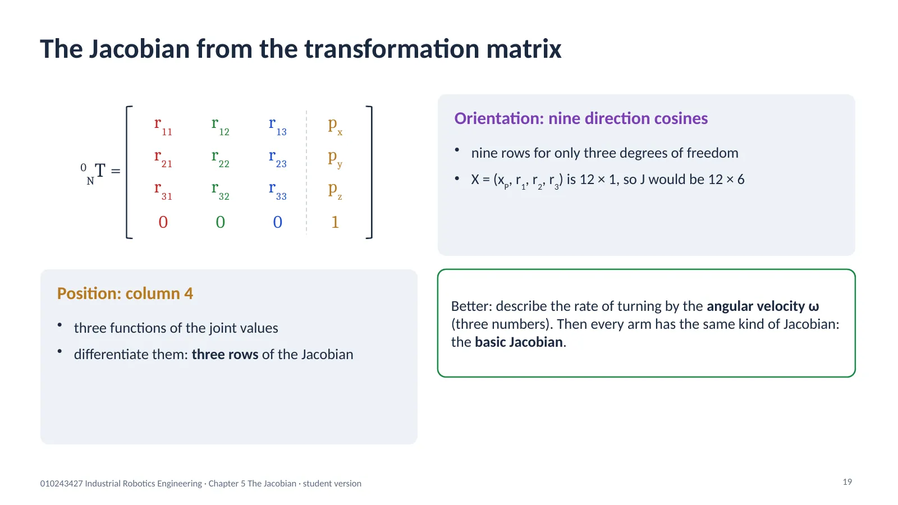
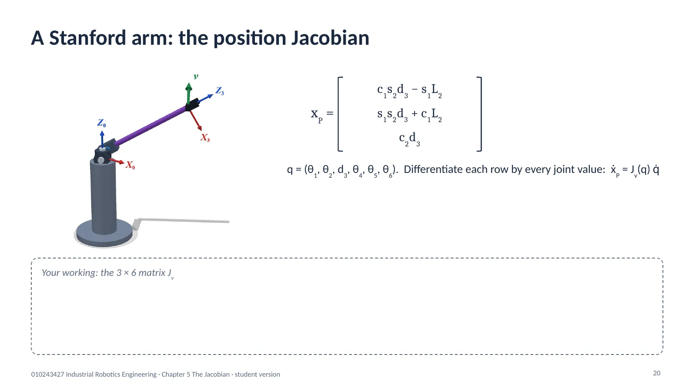
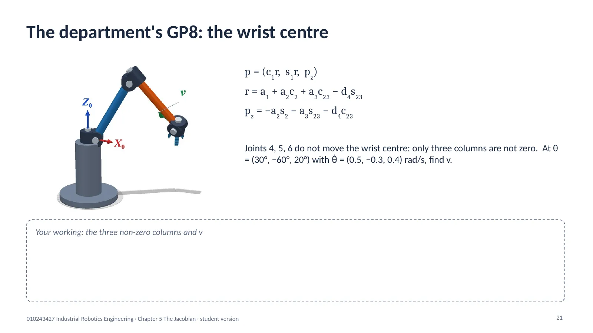
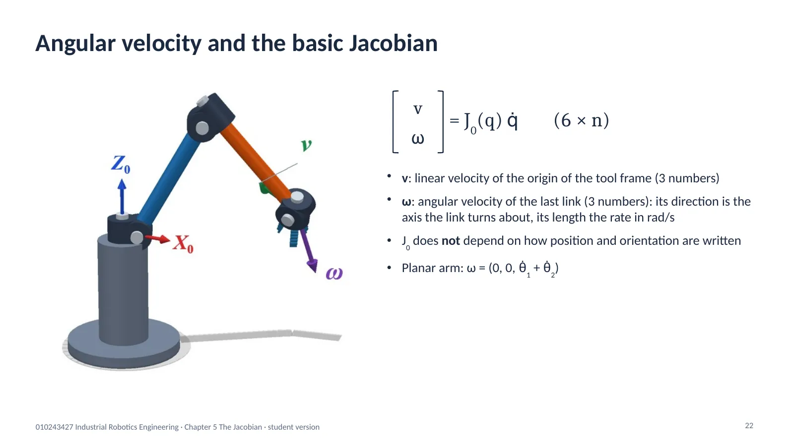
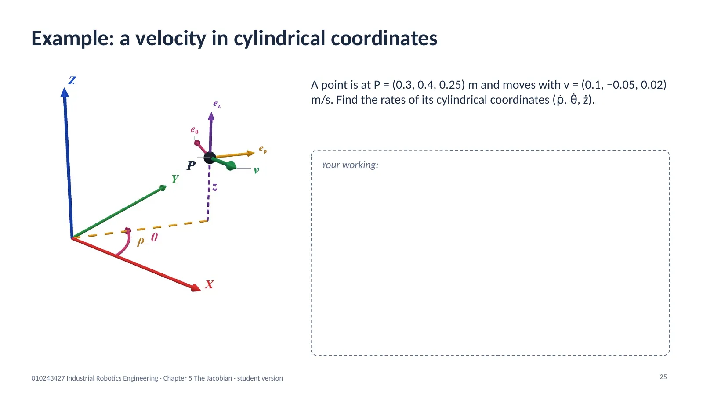
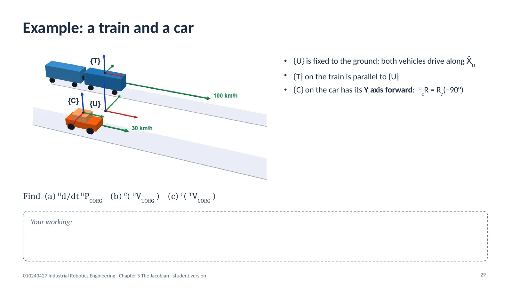

หน้า 5.2 หาจาโคเบียนของแขนในระนาบด้วยการหาอนุพันธ์ของ x, y โดยตรง สำหรับแขนในปริภูมิ ส่วนตำแหน่งของจาโคเบียนได้ด้วยวิธีเดียวกันจากคอลัมน์ 4 ของ \({}^0_NT\) แต่ส่วนทิศของ \({}^0_NT\) เป็นโคไซน์แสดงทิศ 9 ตัว ซึ่งใช้ไม่สะดวก (9 แถวสำหรับองศาอิสระเพียง 3) จึงบอกการหมุนด้วยความเร็วเชิงมุม ω (ตัวเลข 3 ตัว) แทน ได้ \((v, \omega) = J_0\,\dot q\) เรียกว่าจาโคเบียนพื้นฐาน ซึ่งไม่ขึ้นกับวิธีเขียนตำแหน่งและทิศ ถ้าต้องการอัตราของพิกัดแบบอื่นจึงค่อยคูณด้วย \(E_P\) และ \(E_R\) ท้ายหน้าเป็นสัญกรณ์ของความเร็วแบบ Craig ซึ่งใช้ต่อทั้งบทที่ 6 หน้านี้ครอบคลุมสไลด์หน้า 19–25 และ 27–29 มี 5 โจทย์
Page 5.2 found the Jacobian of a planar arm by differentiating x and y. For an arm in space the position part comes the same way, from column 4 of \({}^0_NT\). The orientation part of \({}^0_NT\) is nine direction cosines, which are awkward (nine rows for only three degrees of freedom), so the turning is described by the angular velocity ω (three numbers) instead: \((v, \omega) = J_0\,\dot q\) is the basic Jacobian, which does not depend on how position and orientation are written. The rates of any other coordinates follow by multiplying with \(E_P\) and \(E_R\). The page ends with Craig's notation for velocities, used all through chapter 6. It covers slides pp. 19–25 and 27–29, with 5 problems.



(ก) แขนสองก้านในระนาบของหน้า 5.2 หมุนด้วย θ̇ = (0.5, −1.0) rad/s ก้านสุดท้ายมีความเร็วเชิงมุมรอบแกน Z เท่าไร
(a) The planar two-link arm of page 5.2 turns at θ̇ = (0.5, −1.0) rad/s. What is the angular velocity of its last link about Z?
(ข) ข้อต่อใดของ GP8 ทำให้ความเร็วเชิงเส้น v ของจุดศูนย์กลางข้อมือเปลี่ยน
(b) Which joints of the GP8 change the linear velocity v of the wrist centre?


(ข) องค์ประกอบ x, y, z ของ \({}^C({}^UV_{TORG})\) เป็น km/h (TORG คือจุดกำเนิดของเฟรม {T})
(b) The x, y, z components of \({}^C({}^UV_{TORG})\) in km/h (TORG: the origin of frame {T})
(ค) องค์ประกอบ x, y, z ของ \({}^C({}^TV_{CORG})\) เป็น km/h
(c) The x, y, z components of \({}^C({}^TV_{CORG})\) in km/h